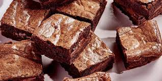

Brownies
The BEST brownie recipe! With crispy edges, fudgy middles, and rich chocolate flavor, these homemade brownies will disappear in no time.
So this fall, as I flipped through Michelle Lopez’s new book Weeknight Baking, her recipe for Boxed Mix Brownies, From Scratch caught my eye. Would I finally be able to make homemade brownies that would be just as delicious as the ones from a box?
Ingredients
- 1 1/2 cups granulated sugar
- 3/4 cup all-purpose flour
- 2/3 cup cocoa powder, sifted if lumpy
- 1/2 cup powdered sugar, sifted if lumpy
- 1/2 cup dark chocolate chips
- 3/4 teaspoons sea salt
- 2 large eggs
- 1/2 cup canola oil or extra-virgin olive oil
- 2 tablespoons water
- 1/2 teaspoon vanilla/li>
Instructions
- Preheat the oven to 325°F. Lightly spray an 8x8 baking dish (not a 9x9 dish or your brownies will overcook) with cooking spray and line it with parchment paper. Spray the parchment paper./li>
- In a medium bowl, combine the sugar, flour, cocoa powder, powdered sugar, chocolate chips, and salt.
- In a large bowl, whisk together the eggs, olive oil, water, and vanilla.
- Sprinkle the dry mix over the wet mix and stir until just combined.
- Pour the batter into the prepared pan (it'll be thick - that's ok) and use a spatula to smooth the top. Bake for 40 to 48 minutes, or until a toothpick comes out with only a few crumbs attached (note: it's better to pull the brownies out early than to leave them in too long). Cool completely before slicing.*** Store in an airtight container at room temperature for up to 3 days. These also freeze well!